0942
[0.1000×30.00-
0.02000×25.00×5]×194.2
m(K2CrO4)
= ───────────────────────
3×1000
=
0.03237 (g)
0943
0.05002×7.04
[CrO42-]= ─────── = 0.0047 (mol/L)
3×25.00
Ksp=[CrO42-]2=(0.0047)2=
2.2×10-5
0944
0.1676×1000
c(KMnO4)=
────────── =0.02001
(mol/L)
55.85×30.00×5
0.02000×20.00×5×126.0
w(H2C2O4・2H2O)= ────────────── ×100% = 50.03%
2×0.2520×1000
0945
n(MnO4-):n(FeC2O4)
= 3:5
0.02000×25.00×143.9×5
w(FeC2O4)=
─────────────── × 100% = 23.98%
3×0.5000×1000
0946
1 mol KMnO4 5/2 mol H2C2O4
5/2 mol Ca2+
0.0500×1.20
5
r(Ca) = ──────── × ── ×40.0×100 = 0.600 (g/L)
1000 2
0947
1
──c(S2O32-)V(S2O32-)×166.0
6
w(KI)= ────────────── ×100% = 2.454%
0.5000×1000
0948
2K+ 11 e, MnO4-
5 e, 1 mol K+
1/1.1 mol MnO4-
(0.02005×18.25)×39.10/1.1
w(K)=
────────────── × 100% = 6.188%
0.2102×1000
0949
1 MnO2 1 C2O42-,
2 MnO4- 5 C2O42-
[ 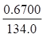
×1000-(5/2)×0.02000×30.00]×86.94
w(MnO2)
= ──────────────────────── ×100 %
0.5000×1000
= 60.86 %
0950
20.00×0.01587×1000
c(K2Cr2O7)=
─────────────
= 0.01667 (mol/L)
253.8×25.00×3
0.01667×23.68×159.7×3
w(Fe2O3)=
─────────────── ×100% = 75.65%
0.2500×1000
0951
n(Cr2O72-)
: n(Fe2+)= 1 : 6
6c(K2Cr2O7)V(K2Cr2O7)×55.85
w(Fe)=
─────────────── × 100%
1000×1.000
c = 0.02984 mol/L
m = 0.02984×294.18 = 8.778 (g)
0952
反应的计量关系是:
n(MnO2) : n(Na2S2O3)
= 1:2
20.00×0.1000
m(MnO2)=
───────── ×1/2×86.94 = 0.0869 (g)
1000
0953
n(As2O3)
: n(I2)= 1:2
2×0.4123
c(I2)×40.28 = ─────── ×1000
197.84
c(I2)=
0.1035 mol/L 又 n(H2NNH2): n(I2)= 1:2
(0.1035×42.41)×32.045 / 2
w(N2H4)=
────────────── ×100% = 98.5%
50.00
1.4286× ────×1000
1000
0954
(0.05000×25.00-0.1000×21.18/6)×208.3/2
w(BaCl2)= ──────────────────────×100%
0.5000×1000
= 18.68%
0955
n(As2O3):
n(I2)= 1:2 n(As2O5):
n(Na2S2O3)= 1:4
0.02500×20.00×197.8
w(As2O3)=
─────────────×100%
= 4.945%
2×1.000×1000
(0.1500×30.00-0.02500×20.00×2)×229.8
w(As2O5)=
──────────────────────×100% = 20.11%
4×1.000×1000
0956
根据题意: c(I2)=0.05000
/2= 0.02500 (mol/L) c(Na2S2O3)=12×0.01000 = 0.1200 (mol/L)
物质的量: n(As2O3
)= n(I2)/2=20.00×0.02500×10-3
/2 = 0.2500×10-3
(mol)
n(As2O5)=
n(Na2S2O3)
=×(30.50×0.1200-2×20.00×0.02500)×10-3
=0.6650×10-3
(mol)
m(As2O3
)= 0.2500×10-3×197.8 = 0.04945 (g)
m(As2O5)=
0.6650×10-3×229.8 = 0.1528 (g)
0957
(1) 1 KI 1 IO3-
3 I2 6 S2O32-
1
──×0.1000×30.00×166.0
6
w(KI)=
───────────────×100%
= 33.20%
50.00
1.000× ───×1000
200.0
(2) 2 KI 1 I2 2 Na2S2O3
2 KBr 1 Br2 1 I2 2 Na2S2O3
n(KBr)= 0.1000×15.00-1/6×0.1000×30.00 = 1.000 (mmol)
1.000×119.0
w(KBr)=
────────────×100% =
47.60%
50.00
1.000× ────×1000
200.0
0958
总的反应结果是 MnO4-
→ Mn2+,
HOCH2-CH2OH → CO32-
计量关系是: n(乙二醇): n(MnO4-)=
1:2
n(MnO4-): n(C2O42-)=
2:5
[0.1160×(50.00+2.30)-0.4913×25.00×2/5]/2
c(C2H4(OH)2)=
────────────────────────
25.00
= 0.02308 (mol/L)
0959
1 mol 乙二醇  1 mol IO4- 1
mol I2 1 mol AsO33-
1 mol IO4- 1
mol I2 1 mol AsO33-
m(乙二醇)= (40.00×0.05000-14.00×0.05000)×62.05 = 80.67 (mg)
0960
(0.2500×20.00 - 5/2×0.0400×10.20 - 5/2×0.0400×30.25)×239.20
w(PbO2)=
────────────────────────────────
0.7340×1000
0.955×239.20
×100% = ─────── = 31.12%
7.340×100
(0.0400×30.25×5/2 - 0.955)×223.2
w(PbO)=
──────────────────×100%
0.7340×1000
(3.025-0.955)×223.2
= ─────────── =
62.95%
7.340×100
0961
反应计量关系是: n(MnO4-):
n(S2O32-)= 1:5
n(MnO4-): n(S2-)= 8:5
5
0.1000×15.00
──[0.02000×25.00 - ─────────]×78.04
8
5
w(Na2S)=
───────────────────────── ×100% = 9.76%
0.1000×1000
0962
1mol C6H5OH
3mol Br2 1mol KBrO3 3mol I2 6mol S2O32-
1
(0.1000×25.00-──×0.1003×29.91)×94.11
6
w(C6H5OH)=
──────────────────────×100%
0.5000×1000
= 37.64%
0963
1 mol KBrO3 3 mol Br2 1 mol C6H5OH
1 mol KBrO3 3 mol Br2 3 mol AsO32-
m(苯酚)=[0.02000×(25.00+1.47)-0.1000×12.00×1/3]×94.11 =12.18 (mg)
0964
在弱碱性溶液中, 根据有关反应得到:
1 mol IO4- 1
mol I2 2 mol S2O32-
��(0.04000×20.00)×214.0/2
w(NaIO4)=
─────────────×100%
= 42.80%
50.00
1.000×───×1000
250
在酸性溶液中, 根据有关反应得到:
1 mol IO4- 4
mol I2 8 mol S2O32-,
1 mol IO3-
3 mol I2 6 mol S2O32-
NaIO3的量(n)为:
1
0.04000×20.00
1
──(0.04000×50.00- ─────────×4) = 0.4000×──
6
2
6
1
0.4000×──×198.0
6
w(NaIO3)=
───────────×100% =
13.20%
25.00
1.000× ───×1000
250
0965
(1) 6 mol H+ 3 mol I2 6 mol S2O32-
0.05005×40.32
c(H+)= ───────── = 0.0807 (mol/L)
25.00
(2) 0.0807×25.00
c(Ag+)= ───────── = 0.0960 (mol/L)
21.02
0966
1
──×(6×0.04000×35.00 - 0.1000×20.00)×26.98
12
w(Al)=
─────────────────────────×100% = 14.39%
25.00
1.000×1000× ────
250.0
0967 (C)
0968 1.
D 2. B 3.
A 4. C
0969 加亚硝酸盐还原,再加尿素除去过量的亚硝酸盐的;
加入 HgCl2生成 Hg2Cl2沉淀
0970 KI的作用是: (1) 还原剂(Cu2+→Cu+) (2) 沉淀剂(Cu+→CuI) (3) 络合剂(I2→I3-)
NH4HF2作用是: (1) 作缓冲剂, 控制 pH 3-4 消除As(V)干扰
(2) 络合掩蔽 Fe3+,
消除Fe3+干扰
KSCN 作用是: 使CuI→ CuSCN 减少对I2吸附, 提高准确度
0971 减小, 偏低, Na2CO3
0972 1. 偏低, 2. 偏低
0973
|
被测物
|
滴定前处理
|
n(被测物):n(滴定剂)
|
|
KI
|
用Cl2预氧化I-为IO3-,
加热煮沸除去剩余Cl2
|
1:6
|
|
BaCl2
|
先沉淀为Ba(IO3)2
,
洗净溶于HCl
|
1:12
|
0974
(1) NaOH, (2) I2,
(3) pH~8, (4) 淀粉, (5) Na2S2O3,
(6) 4 mol/L HCl,
(7) KI
0975
方案一
|
预处理
|
滴定剂
|
滴定条件
必要条件
|
指示剂及
颜色变化
|
计量关系
|
|
在Ag+存在下, 加(NH4)2S2O8
氧化Cr3+至Cr2O72-,加热煮沸,
除去过量(NH4)2S2O8
|
Fe2+
|
酸性
加磷酸
络合 Fe3+
|
邻苯氨基
苯甲酸
紫红→绿
|
1:3
|
方案二
|
预处理
|
滴定剂
|
滴定条件
必要条件
|
指示剂及
颜色变化
|
计量关系
|
|
a. 在Ag+存在下, 加(NH4)2S2O8
氧化Cr3+至Cr2O72-,加热煮沸,
除去过量(NH4)2S2O8
|
Na2S2O3
|
酸性 KI
|
淀粉
蓝→浅绿
|
测 Fe3++Cr3+
|
|
b. 不预处理
|
同上
|
同上
|
同上
|
测Fe3+
|
取同量试液两份分别作 a、b 测定, 耗 Na2S2O3
体积差即为 Cr3+量。
0976
(1) Na2S2O3・5H2O 不纯且易风化, 不能直接配制标准溶液, 故不必准确称量, 亦不应用容量瓶。
(2) 应当是将蒸馏水先煮沸(杀细菌、赶去 CO2 和 O2)、冷却,再加 Na2S2O3若加 Na2S2O3共煮, 易分解生成 S 。
(3) 配好后还应加少量 Na2CO3
使溶液呈微碱性以易于保存。
0977
(1) K2Cr2O7试剂含吸附水, 要在 120°C 烘约 3h。
(2) n(K2Cr2O7):
n(Na2S2O3)= 1:6 ,
0.23 g
K2Cr2O7耗 Na2S2O3体积为:
0.23×6
V(S2O32-)≈ ─────── = 253
(mL)
294×0.02
显然体积太大, 应称约 0.25 g K2Cr2O7配在250 mL容量瓶中, 移取25 mL滴定。
(3) 此反应需加酸。
(4) 反应需加盖在暗处放置 5min。
(5) 淀粉要在近终点才加入。
0978
(1) KMnO4 试剂纯度不高, 不能直接配制, 因此不必准确称量, 也不必用容量瓶。
(2) 试剂与水中含还原物质必须与 KMnO4共煮一定时间, 而不是单独煮水。
(3) 滤去MnO2 应当采用玻璃砂漏斗抽滤, 用滤纸会引入还原物质,而使 KMnO4还原为 MnO2, 使 KMnO4不稳定。
0979
m(KIO3)=
(0.05×20/6)×214.0»36 mg, 此量太小, 称量误差太大, 应称取约 0.35 g, 配在 250 mL 容量瓶中并移取 25.00 mL 标定。需加入过量 KI, 并加入 HCl 酸化, 选淀粉为指示剂, 算式为:
m(KIO3)
c(Na2S2O3)=
─────────────
214.0×6×V(Na2S2O3)
0980
Cr2O72-
过滤,洗涤
试液Ba2+───────→ BaCrO4↓ ───────→ Ba2++ Cr2O72-
中性,弱酸性
HCl 溶解
过量
KI Na2S2O3标液滴定
───────→ I2 ←──────────
暗处放
5min 淀粉指示剂
2 mol Ba2+ 2 mol CrO42- 1 mol Cr2O72- 3 mol I2 6 mol S2O32-
n(Ba2+):
n(S2O32-)= 1:3
0981
1. 移取一定量试液, 加热至 70~80°C, 以KMnO4标准溶液作滴定剂,滴定至粉红色出现。 由此测 H2C2O4浓度:
5c(MnO4-)・V(MnO4-)
c(H2C2O4)=
───────────
2V(试液)
2. 另取同量试液, 以酚酞为指示剂, 以NaOH标准溶液为滴定剂,滴至粉红色出现。由此测得 H2C2O4
和 H2SO4
总量, 由两者之差计算 H2SO4
浓度。
c(OH-)・V(OH-)/2 - c(H2C2O4)・V(H2C2O4)
c(H2SO4)=
────────────────────
V(试液)
0982
测 Ca2+:
取 Ca2+试液V mL 在 pH
13, 以钙指示剂为指示剂, 用 EDTA 标准溶液滴定至由红变蓝
c(EDTA)・V(EDTA)
c(Ca)= ───────────
V(试液)
测 MnO4-:
取含 Ca2+试液V mL 按以下步骤测定
HCl+H2C2O4 加热
陈化,过滤后,洗涤
Ca2+ ──────────→ CaC2O4↓
─────────→ H2C2O4
滴加氨至甲基橙变黄 用 H2SO4 溶解
在 70°C 左右以待测 KMnO4溶液滴定至粉红色
2c(Ca2+)・V(Ca2+)
c(MnO4-)=
───────────
5V(MnO4-)
0983
热水充分浸取试样, 过滤, 滤液中加 (NH4)2S2O8使Mn2+氧化为 MnO4-(Ag催化), 煮沸除去过量的 S2O82-,
在硫磷混合酸中用Fe2+标准溶液滴定, 求 MnSO4的质量分数。
c(Fe2+)・V(Fe2+)・M(MnSO4)
w(MnSO4)=
─────────────────×100%
5m(样)
沉淀在H2SO4介质中加入定量过量的 Na2C2O4还原, 用 KMnO4 标准溶液返滴过量 C2O42-。
m(Na2C2O4)
[─────── - 5c(MnO4-)・V(MnO4-)/2]・M(MnO2)
M(Na2C2O4)
w(MnO2)=
────────────────────────── ×100%
m(样)
0984 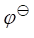
¢= +0.059/2 lg[H+]2
= 0.56+0.04 = 0.60 V
Dj = 0.60-0.54= 0.06 V, 差值太小, 若以 As(V) 直接滴定 I-是极不完全的。而间接碘量法是基于 As(V)与过量 KI 反应,
H3AsO4+
3I-+ 2H+ = HAsO2+ I3-+ H2O
析出的 I3- 不断被 Na2S2O3
滴定去掉, 即
(1) KI 过量,
(2) I3-不断移去, 均有利于上述反应定量地向右进行。
0985
24.85×0.03750×6×71.85
w(FeO)=
─────────────── ×100% = 50.22%
0.8000×1000
1000×0.5500-24.85×0.03750×6×159.7/2
w(Al2O3)=
────────────────────── ×100% = 12.94 %
0.8000×1000
0986
MnO4-氧化能力强, 能氧化 Mn2+生成 MnO2, 若用 Fe2+直接滴定 MnO4-,
滴定过程中MnO4-与Mn2+共存有可能生成 MnO2,就无法确定计量关系。采用返滴定法, 化学计量点前有过量 Fe2+ 存在, MnO4-量极微, 不会有 MnO2生成。
0987
1. 因为Cr2O72-
与 S2O32-
直接反应无确定计量关系, 产物不仅有S4O62-还有SO42-, 而 Cr2O72-
与 I-以及I2 与 S2O32-的反应均有确定的计量关系。
2.Cr2O72-是含氧酸盐, 必在酸性中才有足够强的氧化性。放置是因反应慢。放于暗处是为避免光催化空气中O2氧化I-。稀释则是为避免酸度高时空中O2氧化I-,同时使 Cr3+绿色变浅, 终点变色明显。 若终点后很快出现蓝色, 说明Cr2O72-氧化 I-反应不完全, 应弃去重做。
2909 (1)
0.36V, (2) 0.18V, (3) 0.27V
2910 降低, 增加
2911 增加, 增加
2912 ＜
,  (AgCl/Ag) = (Ag+/Ag)＋0.059lgKsp(AgCl),
而lgKsp(AgCl)是负值
(AgCl/Ag) = (Ag+/Ag)＋0.059lgKsp(AgCl),
而lgKsp(AgCl)是负值
2913 ＜ , (Cu2+/CuI)
= (Cu2+/Cu+)-0.059lgKsp(CuI),
0.059lgKsp(CuI)为负值
2914 ＜ , 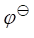
(Ag(NH3)2+/Ag)
= (Ag+/Ag)-0.059lg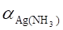
, 而aAg(NH3)>1
2915
aFe(II)
¢ (Fe3+/Fe2+)
= (Fe3+/Fe2+)
+ 0.059 lg─────
aFe(III)
bFe(Phen)32+
= (Fe3+/Fe2+)+
0.059 lg───────
bFe(Phen)33+
= 0.68+0.059lg2.8×106
= 1.06(V)
2916
1
¢ (Fe3+/Fe2+)=(Fe3+/Fe2+)+0.059lg━━━━━━━
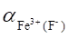
Ka(HF)
10-3.1
[F-]= c(F-)×━━━━━━━━ =10-1×━━━━━━━━━ =10-1.4
[H+]+Ka(HF)
10-3.0+10-3.1
= 1+b1[F-]+b2[F-]2+b3[F-]3=107.7
¢ (Fe3+/Fe2+) =
0.77+0.059lg107.7 = 0.32(V)
2917
[(1)- (2)]n
0.77-0.1
lgK= ━━━━━━━
= ━━━━━━ =11.4
0.059 0.059
K=1011.4
[Ti4+][Fe2+]
lgK=lg━━━━━━━━━
[Ti3+][Fe3+]
[Fe3+]=10-5mol/L
而[Fe2+]≈5×10-3 (mol/L)
[Ti4+]
[Fe2+]
10-2.3
lg━━━━ = lgK-
lg ━━━━ =11.4-lg ━━━━ = 8.7
[Ti3+]
[Fe3+]
10-5
[Ti4+]/[Ti3+]=108.7
2918
j = (Ag+/Ag)+0.059lg[Ag+]
1
=(Ag+/Ag)+0.059lgKsp(AgI)+0.059lg━━━
[I-]
1
j = ¢ (Ag+/Ag)+0.059lg━━━
[I-]
(AgI/Ag) = (Ag+/Ag)+0.059lgKsp(AgI)
lgKsp(AgI)
= [(AgI/Ag)-
(Ag+/Ag)]/0.059
= (-0.15-0.80)/0.059=-16.1
Ksp(AgI)=10-18.1=7.9×10-17
2919
aFe(II)
¢ (Fe3+/Fe2+)=(Fe3+/Fe2+)+0.059lg━━━━━━
aFe(III)
aFe(II)=1+[Y]K(FeY2-)≈[Y]K(FeY2-)
aFe(III)=1+[Y]K(FeY-)≈[Y]K(FeY-)
K(FeY2-)
¢ (Fe3+/Fe2+)
= (Fe3+/Fe2+)+0.059lg━━━━━━
K(FeY-)
= 0.77+0.059×(14.32-25.1)
= 0.13(V)
2920
不能，(当n1=1，n2=2时，DE＞0.27V时才能反应完全),间接碘量法是加入过量I-，而且生成的I2不断被S2O32-滴定，故反应很完全。
2921
H4Fe(CN)6是弱酸，当H+浓度增大[Fe(CN)64-]减小, Fe(CN)63-/Fe(CN)64-增大; Fe(CN)64-的锌盐溶解度更小，加入Zn2+后[Fe(CN)64-]减小, 其电位增大，才能氧化I-。
2922 (B)
2923 (D)
2924
(A) 因为在化学计量点时,应[Ce4+]=[Fe2+],而且很小,[Ce3+]=[Fe3+],而且较大。
2925 (B)
2926 0.14V
2927 0.68V
2928 不改变, 不改变, 不改变
2929 1.06V,
0.86~1.26V, 不合适
2931 (A)
2932 (C)
2933
490.3 25.00
c(S2O32-)・V(S2O32-) =6c(K2Cr2O7)・V(K2Cr2O7)=6×━━━━━×━━━━━
294.2 100.00
490.3 25.00
6×━━━━×━━━━
294.2 100.00
c(Na2S2O3)
= ━━━━━━━━━━━━━━━ =
0.1000(mol/L)
25.00
2934
0.005000×20.00×4×54.94
w(Mn)=
━━━━━━━━━━━━━━━━×100%=2.747%
0.8000×1000
(0.04000×30.00-0.005000×20.00×5)×52.00/3
w(Cr)=
━━━━━━━━━━━━━━━━━━━━━━━━ ×100%=1.517%
0.8000×1000
V(FeSO4)=(0.04000×30.00-0.005000×20.00×5)/0.04000=17.50(mL)
V(KMnO4)=20.00mL
2935
0.02000×20.30×47.88×6
r(Ti) = ━━━━━━━━━━━━━━━━ = 4.665 (mg/mL)
25.00
直接滴定的是Fe2+，它是由Ti(III)还原所得，其量与Ti(III)相等。因Ti(III)还原性太强，空气中不稳定，而Fe2+相对稳定些。
2936
0.01600×29.60×55.85×6
w(Fe)
= ━━━━━━━━━━━━━━━×100%=63.48%
1.250
━━━━×50.00×1000
250
0.01600×(37.40-29.60)×52.00×6
w(Cr)
= ━━━━━━━━━━━━━━━━━×100%=15.58%
1.250
━━━━×50.00×1000
250
2937
0.02000mol/L
0.1978
4 1
[因为c(KMnO4) = ━━━━×1000×━━×━━━━ = 0.02000(mol/L)]
197.8
5 40.00
2939
3 54.94
0.01116×30.00×━━×━━━━
2 1000
w(Mn)
= ━━━━━━━━━━━━━━━━━×100%=5.518%
0.5000
2940
c(Na2C2O4)・V(Na2C2O4) = 5c(KMnO4)・V(KMnO4)/2 + c(MnO2)・V(MnO2)
0.6700
5
86.94
(━━━━×1000- ━━×0.02000×30.00)×━━━
134.0
2
1000
w(MnO2)= ━━━━━━━━━━━━━━━━━━━━━━━━×100%=60.86%
0.5000
2942
1 52.00
(0.2631×50.00-0.04862×16.35×6)×━━×━━━━
3 1000
w(Cr)
= ━━━━━━━━━━━━━━━━━━━━━━━━━×100%= 29.07%
0.5000
2943
CS(NH2)24/3BrO3-
3 76.10
0.008333×15.00×━━×━━━━
4 1000
w(CS(NH2)2)
= ━━━━━━━━━━━━━━━━━━×100%= 10.19%
25.00
0.7000×━━━━
250
2944
122.55
(0.1517×50.00-0.01717×29.87×6)×━×━━━━
6 1000
w(KClO3)=
━━━━━━━━━━━━━━━━━━━━━━━━×100% = 49.88%
0.1846
2945
1mol Pb3O43mol Pb2+3molCrO4-3/2molCr2O72- 9/2 molI29 molS2O32-
1 mol Pb3O4 9 mol S2O32-
1 685.6
0.05000×12.00×━×━━━━
9 1000
w(Pb3O4)
= ━━━━━━━━━━━━━━━━×100%
= 45.71%
0.1000
2946
0.1052×1000
卡尔-费休溶液对水的滴定度是━━━━━━━ =4.125 (mg/mL)
25.50
22.50×4.125
试剂中H2O的质量分数= ━━━━━━━×100%=46.06%
0.2015×1000
18.02×7
水含量的理论值是━━━━━━×100%=51.17%， 故MgSO4・7H2O试剂失去部分结晶水。
246.5
2947
1 mol IO3-3 mol I23 mol S
1 32.06
(25.00×0.002027×3-1.085×0.1127×━━)×━━━
2 1000
w(S)=
━━━━━━━━━━━━━━━━━━━━━━━━━×100%=0.05668%
5.141
2948
1 mol H2C2O4・2H2O1 mol C2O42-2/5 mol MnO4-
28.62×5.980
5 126.07
━━━━━━×━×━━━
158.03 2 1000
w(H2C2O4・2H2O)= ━━━━━━━━━━━━━×100%=85.2%
0.4006
2949
1 mol N2H41 mol IO3-
c(N2H4)・V(N2H4) = c(IO3-)・V(IO3-)
c(N2H4)
= c(IO3-)・V(IO3-)/V(N2H4)
= 29.18×0.02722/25.00=0.03177(mol/L)
2950
1 mol H2O22mol Ce4+
1 34.01
18.70×0.1208×━×━━━
2 1000
w(H2O2)=
━━━━━━━━━━━━━×100%=0.761%
5.00×1.010
2951
1 mol As2O32 mol As(III) 2 mol I2
1
197.84
━━×0.04489×37.06×━━━━
2
1000
w(As2O3)=
━━━━━━━━━━━━━━━━×100%=39.27%
0.4191
2952
设氧化剂与I-作用时每摩尔氧化剂得到x摩尔电子
1 mol 氧化剂x mol I-x/2
mol I2x mol S2O32-
20.00×0.1250
x=
━━━━━━━━ =2 (mol)
0.3125
━━━━×1000
250.0
2953
滴定反应如下：
Fe2++VO2++2H+=Fe3++VO2++H2O
9.932 1000
━━━━×━━━×28.59
392.1
250.0
c(NH4VO3)=
━━━━━━━━━━━━ =
0.1159(mol/L)
25.00
2954
设Fe的质量分数为x，则Fe2O3的质量分数为100-x
; 根据题意
x 100-x
2M(Fe)
M(Fe)
0.2250×━━ +0.2250×━━━×━━━━━ = c(MnO4-)・V(MnO4-)×5×━━━
100
100 M(Fe2O3)
1000
55.85 100 2×55.85×100
0.01982×37.50×5× ━━━×━━━━ - ━━━━━━━━
1000 0.2250
159.7
w(Fe)=
x = ━━━━━━━━━━━━━━━━━━━━━━━━━━━━ =74.20%
2×55.85
1- ━━━━━
159.7
w(Fe2O3)
= (100-x)% = (100-74.20)% = 25.80%
2955
55.85
0.0160×29.6×6×━━━━
1000
w(Fe)
= ━━━━━━━━━━━━━━━×100%=63.5%
50.0
2.50×━━━
500
52.00
0.0160×(37.4-29.6)×6×━━━
1000
w(Cr) = ━━━━━━━━━━━━━━━━×100%=15.6%
50.0
2.50×━━━
500
2956
1 mol Cr1/2 mol Cr2O72-3 mol Fe2+
1 52.00
(0.1200×50.00-15.05×0.006000×1000/55.85)×━×━━━
3 1000
w(Cr)=
━━━━━━━━━━━━━━━━━━━━━━━━━━━━×100%
0.5000
=15.19%
w(Cr2O3)
= w(Cr)×M(Cr2O3)/[2M(Cr)] = 15.19%×151.99/(2×52.00) = 22.20%
2957
1mol FeCl3・6H2O1mol Fe3+1/2mol I3-1mol S2O32-
270.30
0.1000×18.17×━━━
1000
w(FeCl3・6H2O)= ━━━━━━━━━━━━×100% = 98.2%(属于三级品)
0.5000
2958
1mol Cu2+1/2mol I3-1mol S2O32-
63.55
0.1028×21.08×━━━
1000
w(Cu)
= ━━━━━━━━━━━━━━×100%=64.81%
25.00
2.125×━━━
250
2959 1mol H2O22/5mol MnO4-
5
0.02732×35.86×━×34.015
2
c(H2O2)=
━━━━━━━━━━━━━━━ =
33.32(g/L)
1
━━×25.00
10
2960
1mol CH3COCH33mol I2
1mol I22mol S2O32-
1 1 58.08
(0.05000×50.00-0.1000×10.000×━)×━━×━━━━
2 3 1000
w(丙酮)= ━━━━━━━━━━━━━━━━━━━━━━━━━━×100%
= 38.72%
0.1000
2961
铅丹Pb3O4的组成实为PbO2和2PbO，在酸性介质中与Fe2+作用的是PbO2。
1mol Pb3O41mol PbO22mol Fe2+2/5mol MnO4-
5 685.6
(48.05×0.04000-3.05×0.04000)×━×━━━
2 1000
w(Pb3O4)
= ━━━━━━━━━━━━━━━━━━━━━━×100% = 88.1%
3.500
2962 1mol K2CrO43/2mol I23mol S2O32-
1
0.1000×40.00×━
3
c(K2CrO4)
= ━━━━━━━━━━ =
0.05333(mol/L)
25.00
194.2
m(K2CrO4)
= 0.05333×━━━━×25.00
= 0.2589(g)
1000
c(NaOH)・V(NaOH)
c(HCl)
= ━━━━━━━━━━
V(HCl)
0.2000×40.00
= ━━━━━━━━ = 0.3200
(mol/L)
25.00
36.46
m(HCl)
= 0.3200×━━━━×25.00
= 0.2917 (g)
1000
2963 1mol VO2+1/5mol MnO4-
50.94
0.02000×3.05×5×━━━
1000
w(V)
= ━━━━━━━━━━━━━━×100%
= 1.55%
1.000
1mol Mn2+1/4mol MnO4-
54.94
(0.02000×5.10×4 - 0.02000×3.05)×━━━
1000
w(Mn)
= ━━━━━━━━━━━━━━━━━━━━━━×100% = 1.91%
1.000
2964
54.94
0.00500×20.00×4×━━━
1000
w(Mn)
= ━━━━━━━━━━━━━━━×100%
= 2.75%
0.800
1 52.00
[0.0400×30.00-0.00500×20.00×(4+1)]×━━×━━━━
3 1000
w(Cr)
= ━━━━━━━━━━━━━━━━━━━━━━━━━━━×100%=1.52%
0.800
2965
有关反应与滴定反应如下：
强碱性
H2COH-CHOH-CH2OH+14MnO4-+20 OH-=====
3CO32-+14MnO42-+14H2O
(过量，定量)
2MnO4-+5C2O42-+16H+=2Mn2++10CO2↑+8H2O
1甘油14MnO4-，1MnO4-5/2 C2O42-
2 5
m(甘油)=(50.00×0.03257+0.01488×26.18-10.00×0.2500×━━)×━━
5 14
5
×M(甘油)=(1.6285+0.3896-1.000)×━━×92.06=33.48 (mg)
14
2966 (a)
55.85
0.02237×28.59×5×━━━
1000
w(Fe)=
━━━━━━━━━━━━━━×100%=17.86%
1.000
(b)
71.85
0.02237×15.60×5×━━━
1000
w(FeO)=
━━━━━━━━━━━━━━×100%=8.36%
1.500
1.500 5 159.7
0.02237×(28.59×━━━ - 15.60)×━×━━━
1.000
2 1000
w(Fe2O3)=
━━━━━━━━━━━━━━━━━━━━━━×100%=16.25%
1.500
2967 n(V) =0.02000×2.50×5=0.2500 (mmol)
n(Mn)=(0.02000×4.00×4-0.02000×2.5)=0.2700 (mmol)
n(Cr)=(0.1000×40.00-0.2500-0.2700×5)/3=0.800 (mmol)
0.2500×50.94
w(V)=
━━━━━━━×100%=8.49%
0.150×1000
0.2700×54.94
w(Mn)=
━━━━━━━×100%=9.89%
0.150×1000
0.800×52.00
w(Cr)=
━━━━━━━×100%=27.73%
0.150×1000
2968
1. 2Cu2++4I-=2CuI↓+I2
2. I2+S2O32-=2I-+S4O62-
3. CuI+SCN-=CuSCN↓+I-
2969
1. Cr2O72-+6I-+14H+=2Cr3++3I2+7H2O
2. I2+S2O32-=2I-+S4O62-
2970
1. 2Fe3++Sn2+=2Fe2++Sn4+
2. SnCl2+2HgCl2=SnCl4+Hg2Cl2
3. Cr2O72-+6Fe2++14H+=2Cr3++6Fe3++7H2O
2971
1. Pb2++CrO42-=PbCrO4↓
2. 2PbCrO4+2H+=2Pb2++Cr2O72-+H2O
3. Cr2O72-+6I-+14H+=2Cr3++3I2+7H2O
I2+2S2O32-=2I-+S4O62-
2972
1. Ca2++C2O42-=CaC2O4↓
2. CaC2O4+2H+=Ca2++H2C2O4
3. 5H2C2O4+6H++2MnO4-=10CO2+2Mn2++8H2O
2973
1. I-+3Cl2+3H2O=IO3-+6Cl-+6H+
2. IO3-+5I-+6H+=3I2+3H2O
I2+2S2O3-=2I-+S4O62-
2974
1. KBrO3+5Br-+6H+=3Br2+3H2O
2. 3Br2+C6H5OH=Br3C6H2OH+3HBr
3. Br2+2I-=2Br-+I2
4. I2+2S2O3-=2I-+S4O62-
2975
KMnO4，Ce(SO2)2，K2Cr2O7，I2;
Na2S2O3，Fe2+。
还原剂易被空气中氧氧化,不稳定
2976 KBrO3
, 酸化
2977 负
因为n(Na2SO3):n(I2)=1:1， 而n(Na2S2O3):n(I2)=2:1,
故耗Na2S2O3体积减少了，使得测定结果产生负误差。
2978
将Fe(III)还原为Fe(II)。 除去过量的SnCl2 。 抑制了Cl-对KMnO4的还原作用(即减少诱导反应)。
2979
二苯胺磺酸钠(或邻苯氨基苯甲酸)。 淀粉溶液
2980 无 Na2S2O3过量[97.27×0.1098/2=5.340>97.31×0.05480=5.333(mmol)]
2981
新煮沸并冷却了的蒸馏水 ; 为了除CO2、O2和杀死细菌，因为它们均能使Na2S2O3分解
2982 (B)
2983 (C)
2984 10:11
4901 c
(I2) = 5.077 / ( 253.81 ´ 200 / 1000 ) = 0.100 (mol
/ L)
[I3-] = 0.100 mol /
L [I-] = 0.500 - 0.100 = 0.400
(mol / L)
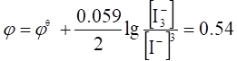
4902
(
1 ) [Ag+]b1[L] = [Ag+]b2[L]2 [L] = 1.0 ´ 10-3 mol
/ L aAg(L) = 101
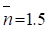
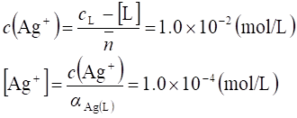
(
2 ) 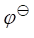
¢ (Ag+/Ag)
= (Ag+/Ag)
- 0.059 lg aAg(L) = 0.68 V
j
(Ag+/Ag) = ¢ (Ag+/Ag)
+ 0.059 lg c(Ag+) = 0.56 V
¢ (Ag+/Ag)
+ 0.059 lg c(Ag+) = 0.56 V
4903
MnO4-氧化HCOOH：HCOOH + 2 MnO4- + 4OH- = CO32-
+ 2MnO42- + 3H2O，酸化后，MnO42-发生歧化反应：3MnO42-
+ 4H+ = 2 MnO4- + MnO2¯ + 2H2O ，然后I-将MnO4-和MnO2全部还原为Mn2+，Na2S2O3标液滴定析出的I2。选取基本单元：1/5 KMnO4，Na2S2O3，1/2 HCOOH
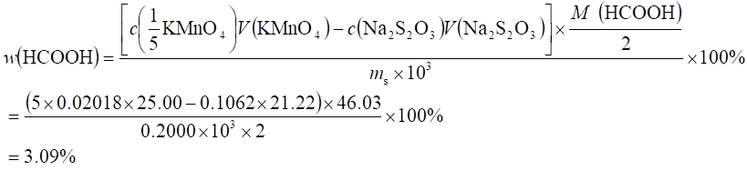
4904
改变反应历程，从而加速反应，催化剂本身反应前后不变，用As(Ⅲ)标定Ce4+时，加I-可加速反应(或Ag+催化 (NH4)2S2O8氧化Mn2+或Cr3+的反应)；某一反应的发生促进了另一反应的进行，在KMnO4滴定Fe2+时加速了KMnO4氧化Cl-的反应。
4905
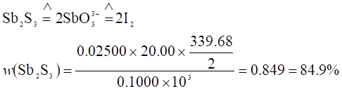
4906
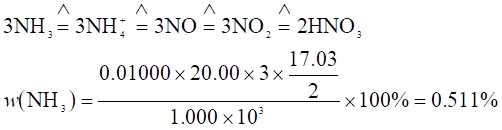
4907
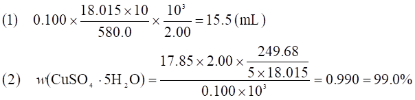
4908
∵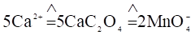
, 设消耗KMnO4标准溶液的体积为V(KMnO4) (mL)
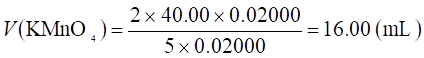
4909
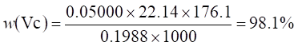
4910
Pb3O4
+ 8HCl = 3PbCl2 + Cl2 + 4H2O
Pb2+ + CrO42- = PbCrO4¯
2PbCrO4 + 2H+
= Cr2O72- + 2Pb2+ + H2O
Cr2O72- + 6I- + 14H+ =
3I2 + 2Cr3+ + 7H2O
I2 + 2S2O32-
= 2I- + S4O62-
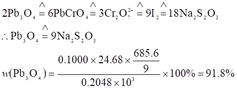
4911
Ce4+ + Fe2+
= Ce3+ + Fe3+
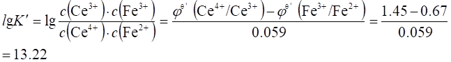
混合后：c(Fe3+) = c(Ce3+) = 0.10/2 = 0.050 mol /
L
c(Fe2+) = ( 0.40 - 0.10 ) / 2 = 0.15 mol / L
代入K¢式中：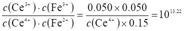
解得：c(Ce4+) = 1.0 ´ 10-15 mol / L
4912
Cr2O72-
+ 14H+ + 6e = 2Cr3+ + 7H2O
0.100 mol / L K2Cr2O7还原至一半时，c(Cr2O72-) = 0.0500 mol / L, c(Cr3+)
= 0.100 mol / L
j =¢ (Cr2O72-/Cr3+)
+ 0.059/6 lg ( c(Cr2O72-) / c2(Cr3+)
)
= 1.00 +
0.059/6 lg (0.0500/0.1002 ) = 1.01 (V)
4913
j(Ag+/Ag)= ( Ag+/Ag)+0.059lg[Ag+]
= ( Ag+/Ag)+0.059lg(Ksp/[CrO42-])1/2
( Ag+/Ag)+0.059lg(Ksp/[CrO42-])1/2
j(Ag2CrO4/2Ag)=
(Ag2CrO4/2Ag)+0.059lg(1/[
CrO42-])1/2
j(Ag+/Ag)=
j(Ag2CrO4/2Ag)
\ 0.799+0.059lg(Ksp)1/2=0.446
Ksp(Ag2CrO4)=1.1´10-12
4914
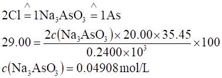
m(As) = 0.04908 ´ 74.92 = 3.677 mg / mL
OCl- + 2I-
+ 2H+ = I2 + Cl- + H2O
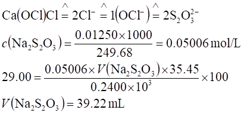
4915
(Hg2Cl2/2Hg)
= (Hg22+/2Hg)
+ 0.059/2 lg Ksp
= 0.792 + 0.059/2 lg ( 1.32 ´ 10-18 )
= 0.265 V
j (Hg2Cl2/2Hg)
=(Hg2Cl2/2Hg)
+ 0.059/2 lg ( [Cl-]-2 )
= 0.265 + 0.059/2 lg ( 0.010 -2 )
= 0.383 V
4916
反应中两电对电子转移数的最小公倍数n = 5
lg K = ( 1.20 -
0.535 ) ´ 5 / 0.059 =
56.36 K
= 2.3 ´ 1056
4917
(
1 ) Cu + 2Ag+ = Cu2+ + 2Ag
lg
K = ( 0.80 - 0.337 ) ´ 2 / 0.059 =
15.69 K
= 4.9 ´ 1015
( 2 ) 平衡时， c(Cu2+)
= 0.050 / 2 = 0.025 mol / L
lg K = lg ( c(Cu2+) / c2(Ag+)
) c(Ag+)
= 2.3 ´ 10-9 mol / L
4918
2Fe3+
+ H2S = 2Fe2+ + S + 2H+
平衡时： c (Fe2+)
»
0.100 (mol / L) , c (H2S) = 0.100 (mol / L)
c (H+) = 0.250 + 0.100 = 0.350 (mol / L)
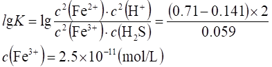
4919
(PbI2/Pb)
= (Pb2+/Pb)
+ 0.059/2 lg Ksp(PbI2)
= -0.126 + 0.059/2 lg (1.0 ´ 10-8 ) = -0.36 V
4920
¢酶+0.059/2 lg(4.2´10-5/1.8´10-5)=-0.187+0.059lg(3.9´10-5/5.5´10-5)
¢酶=-0.21V
4921
CH3OH
+ Cr2O72- + 8H+ = CO2 + 2Cr3+
+ 6H2O
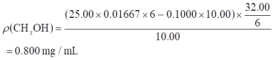
4922
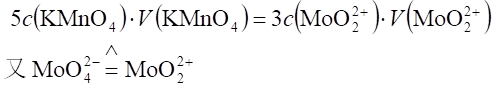
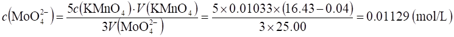
4923
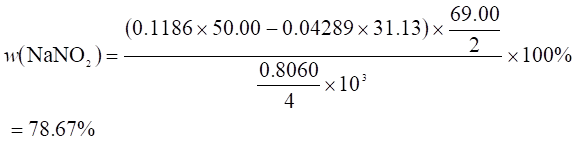
4924
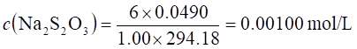
SeO32-
+ 4e ®Se¯ 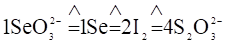
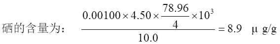
4925
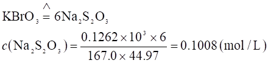
4926
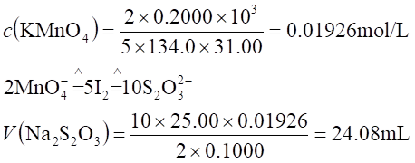
4927
S
+ O2 = SO2 ， SO2 + H2O = H2SO3
H2SO3 +
I2 + H2O = SO42- + 2I- +
4H+
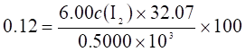
c (I2) = 0.00312 mol / L
m (I2) = c (I2)´ V (I2) ´M(I2) = 0.00312 ´ 1.0 ´ 253.8 = 0.79
(g)
4928
2Cu2+
+ 4I- = 2CuI + I2 ， I2 + 2S2O32- = S4O62-
+ 2I-
解法一：
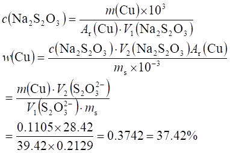
解法二：
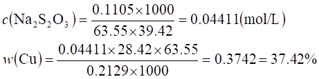
4929 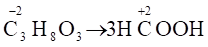
丙三醇的基本单元： 1/8 C3H8O3
r(丙三醇) = 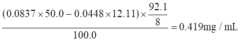
4930
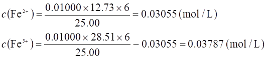
4931
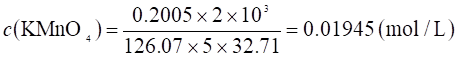
4932
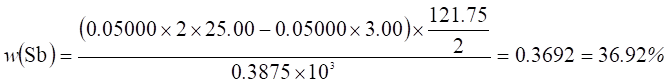
4933
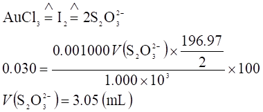
4934
c (KMnO4)
´ 5 ´ 1.00 ´ 10-3
= 0.1250 / 55.85
c (KMnO4)
´ 5 ´ 0.175 = c (KHC2O4´H2C2O4)
´ 4 ´ 1.00
0.200V(NaOH)
= 3 ´ 1.00 ´ c (KHC2O4´H2C2O4)
由上三式解得： V(NaOH) = 1.47 mL
(氧化还原反应中：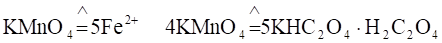
4935
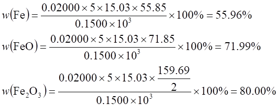
4936
(
1 ) 偏低
( C2O42-分解 )
( 2 ) 偏高 ( 生成MnO2¯)